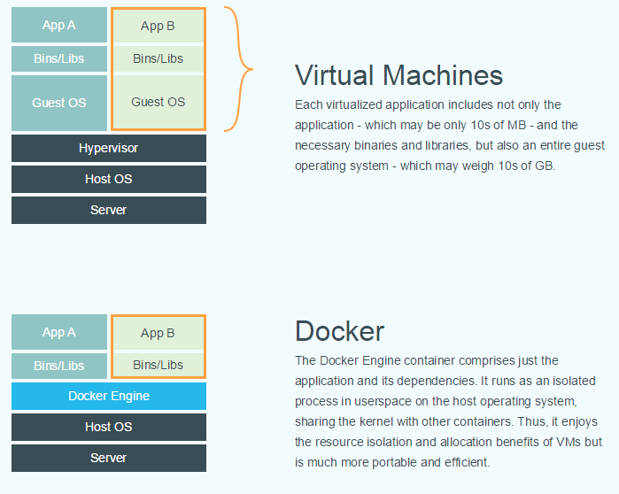

DVM - Make VM run like Container
Docker, without doubt, has been the phenomenon in the world of open source startups. With the rise of Docker, we are observing a paradigm shift from virtualization to containerization, which throws away the idea to emulate the entire, complete "Machine", instead to package the minimal amount of data for running the application and its dependencies.
CaaS and the need for isolation
Besides the trimmed image size, Containerizatin also removes the middle layer of the Guest OS. According to Docker's website:

A great benefit of this is Immutable Infrastructure. Configurations are moved out to external data store, the image is static, app run in the exact same state as it is shipped, no more moving parts. Therefore, a new form of cloud is emerging: Container-as-a-Service, which blurs the line between IaaS and PaaS:

However, container, which is rooted in Shared Kernel, is considered lacking of the necessary isolation for multi-tenant environments. When containers of different customers share the single kernel on the box, no matter physical or virtual, it is not surprising that the attack surface is so big that it is merely impossible to ensure the security.
Virtualization, on the other hand, is born to emulate isolated hardware, a.k.a. "Machine". This hardware-enforced isolation is safe. As the proof, most public clouds today, if not all, are built on virtualization.
So, the question is: How we can make VM run like Container?
Without surprise, two major CaaS services today, AWS ECS and Google GCE, are both built on top of VM instance.
Introduce DVM
Simply put,
DVM = Hypervisor + Docker Image
DVM allows you to run a Docker image with any hypervisor (KVM, Xen, etc.). It creates a "VM" instance with a minimalist Linux kernel (called HyperKernel), which loads the Docker images from the host machine.
Since there is no guest OS in the DVM instance (like CoreOS or RancherOS) except the kernel, DVM has an amazingly fast boot performance:
It takes 0.54 second to launch a Nginx image on a common laptop:
[root@user ~:]# docker pull nginx:latest
[root@user ~:]# dvm run nginx:latest
open Chrome ---> load the page
Internal of DVM, it doesn't use Docker daemon, LXC, cgroup, namepsace (except mnt in the case of Pod), and any other Container technology. Instead, DVM is a pure hypervisor-based solution, where each instance runs its own kernel.
The best from both worlds
I am not saying that hypervisor is better than container to implement the goal of Containerization. Technology are always with pros/cons.
Besides the isolation feature, DVM actually combines the best from both virtualization and container:
| - | Container | VM | DVM |
|---|---|---|---|
| Isolation | Weak, shared kernel | Strong, HW-enforced | Strong, HW-enforced |
| Boot | Fast, sub-second | Slow, tens of seconds | Fast, sub-second |
| Portable | Yes, but kernel dependency sometimes | No | Yes, bring your own kernel |
| Performance | Great | Good | Good, the same with VM |
| Immutable | Yes | No, configuration management required | Yes, only kernel+image |
| Image Size | Small, MBs | Big, GBs | Small, MBs |
| Compatibility | No, need new tools | Great, everything just works | Good, it is still a "Machine", much less changes |
| Mature | Not yet | Production ready, SDN, SDS, LiveMigration, etc. | Not yet, but can leverage with VM technology |
| Migration | Need to build a new container platform | - | Plug & Play with any virtual infrastructure |
DVM is an open source project, which is inspired by Google's experimental NoVM.